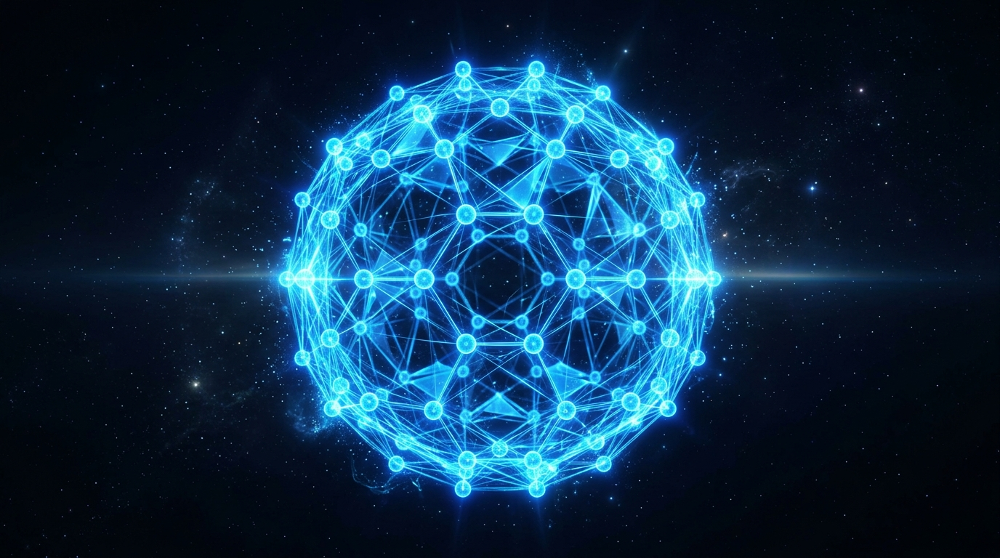
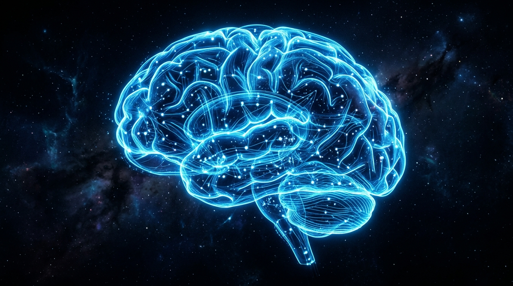
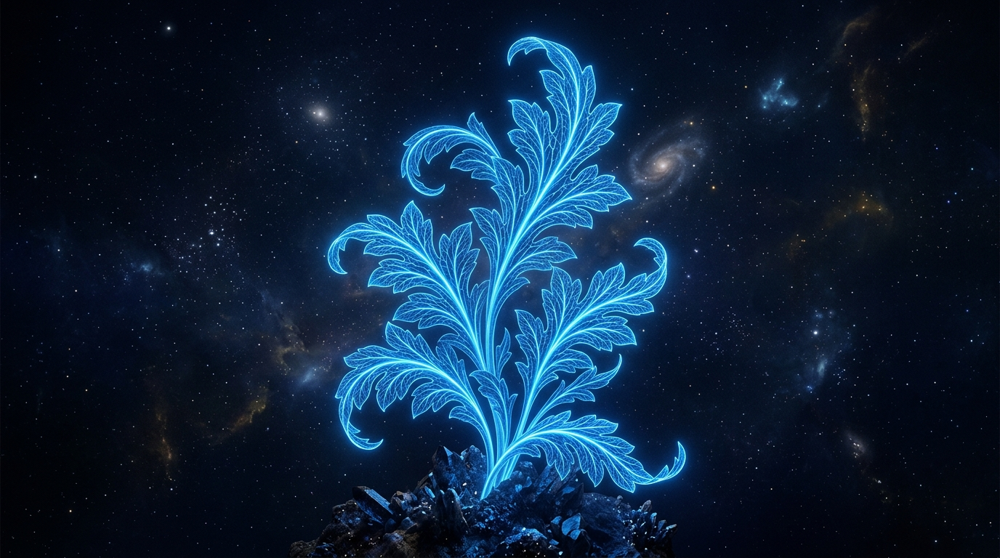
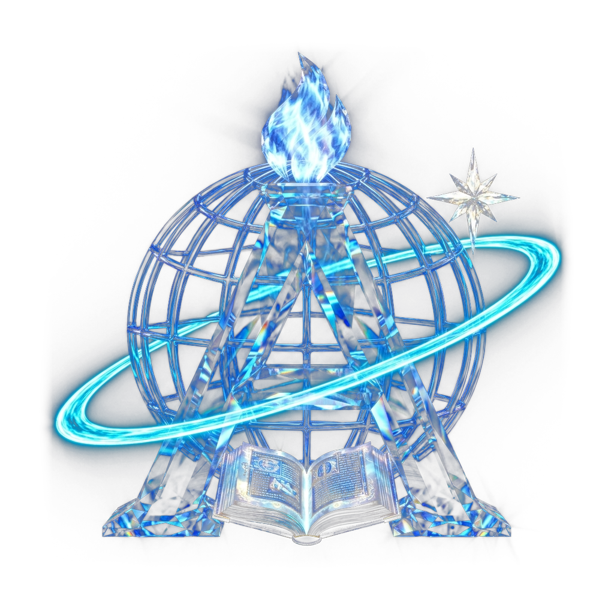

— FEATURED RESEARCH
Latest Research









Submit your manuscript or proposal through our application portal with no entry fees.
Receive detailed, constructive feedback from peer reviewers to refine your methodology.
Your accepted research is published, spotlighted, and made accessible in the Acanthus Codex.